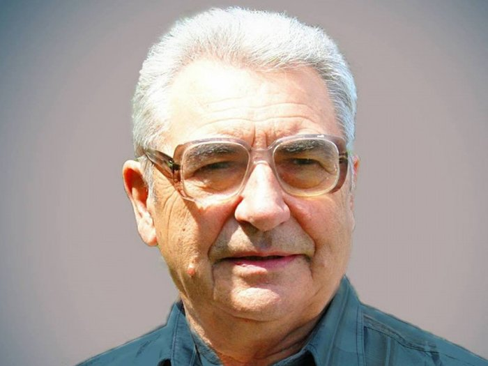

Про сайт
Йосип Струцюк
Скупався ранок в молодій росі, У небі яснім — крила журавлині, Ніде нема таких густих лісів, Таких свічад-озер, як на Волині.

Струцюк Йосип Ґеорґійович
Дорогий друже! Раді вітати тебе на нашому сайті.
Цей сайт про знакового волинського письменника Йосипа Струцюка, творчість якого яскравим рядком уписана у контекст сучасної української літератури.
Струцюк Йосип Ґеорґійович — український письменник-шістдесятник, Заслужений діяч мистецтв України, Почесний громадянин Луцька.
Поет, прозаїк широкого жанрового діапазону, драматург, есеїст, дитячий письменник, кіносценарист, публіцист, наставник творчої молоді…
Цю та іншу інформацію про Йосипа Струцюка ти зможеш знайти на сторінках цього сайту.